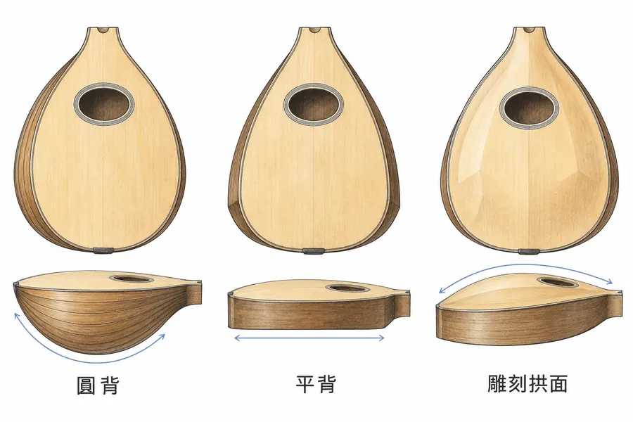
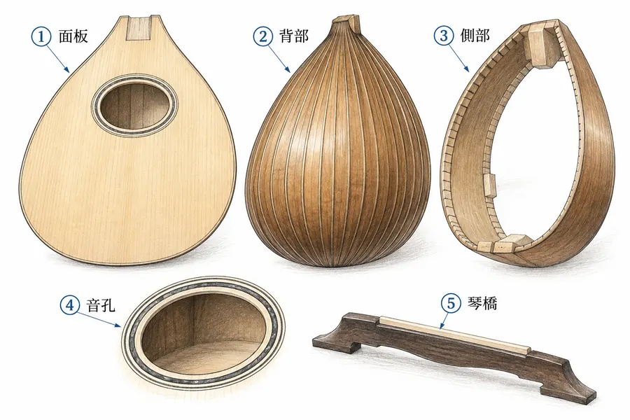
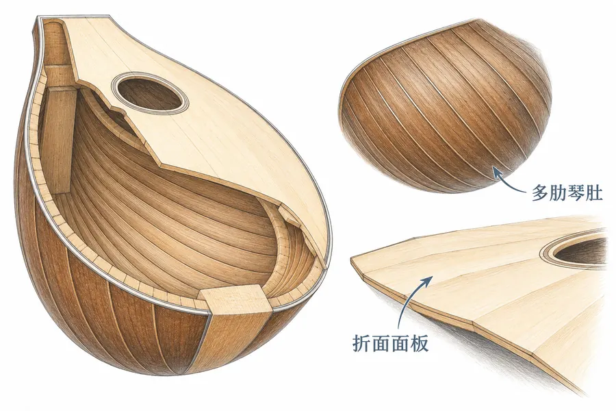
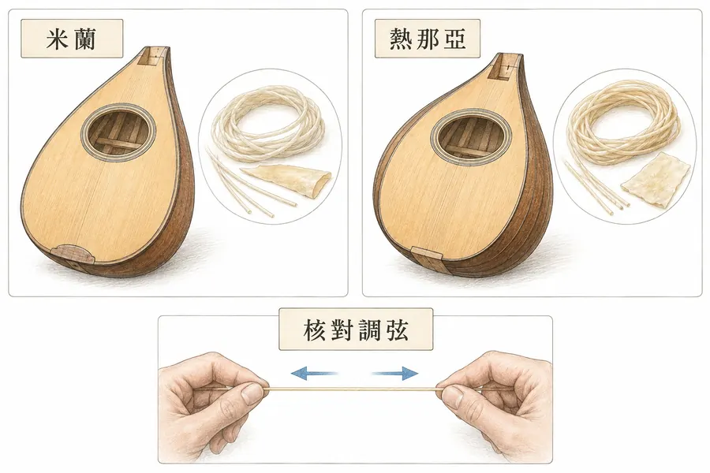
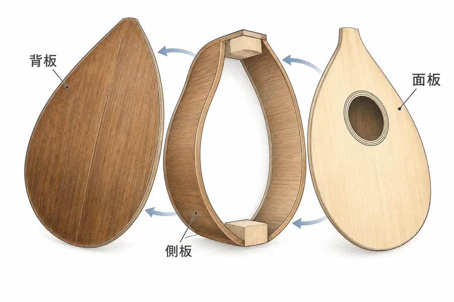
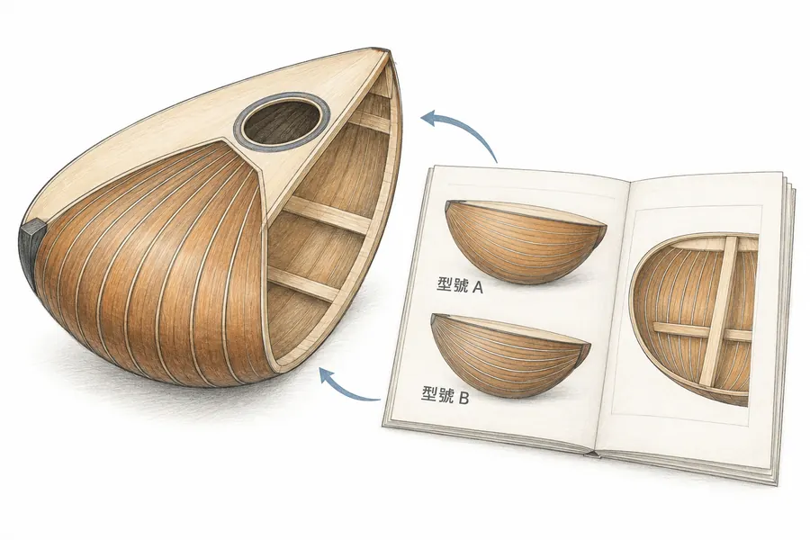
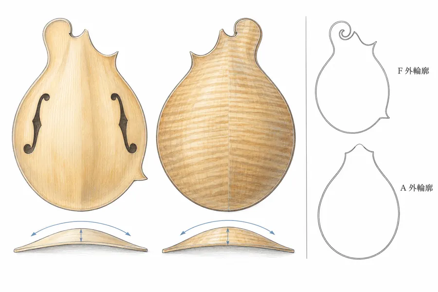
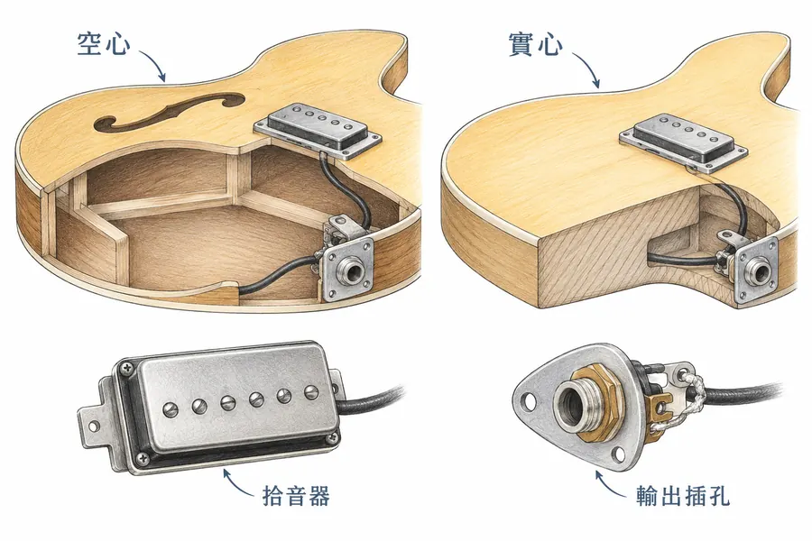
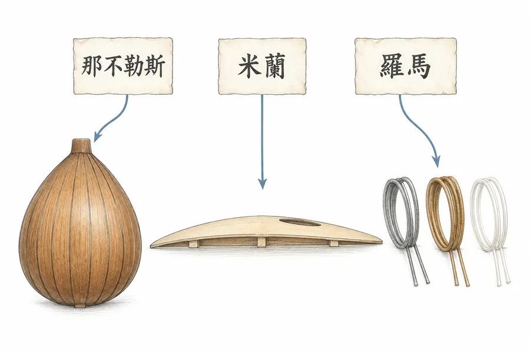

各地琴型與結構特色
第 6 章・建議學習 1 小時
本章重點
- 家族回答「音域與調弦」；型制回答「用什麼結構做出這個音域」。這是兩個不同的問題。
- 判斷型制要看五件事：面板、背部、側部、音孔、琴橋。正面輪廓只是第一步。
- 「圓背＝古典」「F-style＝bluegrass」「平背＝民謠」是歷史印象，不是結構描述。
- 「Roman（羅馬式）」這個詞最容易跨時代混用，所以一定要加年代。
- A-style／F-style 是外形分類，不是「初階／高階」的等級表。
兩把琴可以有一樣的 G–D–A–E 調弦，卻在琴體剖面、面板受力、音孔、琴橋與內部支撐上完全不同。
這就是「家族」和「型制」必須分開談的原因：
| 問題 | 由哪個概念回答 |
|---|---|
| 這件樂器屬於哪個音域？調什麼音？ | 家族（family） |
| 這個音域是用什麼結構做出來的？ | 型制（form／style） |
打個比方：家族是「這台車是轎車還是貨車」，型制是「它的引擎怎麼做的」。同一種車，可以有好幾種引擎做法。
最常見的錯誤，是把型制寫成風格標籤：
- 圓背＝古典
- F-style＝bluegrass
- 平背＝民謠
這些連結有歷史根據，但不能取代結構描述。
本章先看琴體怎麼承受弦力、面板怎麼工作，再談各地音樂文化如何選擇這些設計。
琴型與結構比較

圖解 琴型與結構比較（示意）
| 型制 | 背部／琴體 | 面板 | 典型弦系統 | 研究重點 |
|---|---|---|---|---|
| Neapolitan bowlback（那不勒斯圓背） | 多 ribs 深碗 | 折面＋ladder bracing | 8 弦／4 course | 高張力與 stiff bowl（剛硬碗狀背） |
| Early Roman mandolino（早期羅馬曼陀利諾） | 小型 roundback（圓背） | 早期 lute（魯特琴）式 | gut、多 course | 不可等同現代 Roman style |
| Milanese／Genovese（米蘭式／熱那亞式） | roundback | 依學派 | 常見 6 course gut | 調弦與命名不同 |
| American carved-top（美式雕刻拱面） | carved back＋sides | carved spruce top | 8 弦 GDAE | Gibson 專利系譜 |
| Japanese family（日本家族） | 圓背為主；低音可 flat | 依型號 | 完整家族 | 合奏需求與量產 |
表中幾個名詞先解釋：
- ribs：琴肚上拼成碗狀的狹長木條。
- bowlback（圓背）：琴背像碗一樣凸起的構造。
- flatback（平背）：琴背是平的。
- bracing（力木）：黏在面板內側的支撐木條。
- ladder bracing（梯式力木）：像梯子橫桿一樣橫向排列的力木。
- carved（雕刻成形的）：用整塊木料削出弧度，不是彎薄板。
- gut（腸弦）：用動物腸製成的弦，是鋼弦之前的材料。
6.1 琴型比較的五項要素
判讀一把曼陀林的型制，正面輪廓其實只是第一步。
真正有結構意義的問題，至少有五個：
| # | 要問的問題 | 可能的答案 |
|---|---|---|
| 1 | 面板是平的、折面的，還是雕刻拱面？ | flat／cant／carved |
| 2 | 背部是多 ribs 深碗、平背，還是 carved back？ | bowlback／flatback／carved |
| 3 | 側部是獨立 side ribs，還是 bowl shell 的一部分？ | 分開的／一體的 |
| 4 | 音孔是圓／橢圓、f-hole（f 形音孔），還是側孔？ | round／oval／f-hole／side port |
| 5 | 琴橋是浮動式還是固定式？ | floating／fixed |
只要把這五件事記錄清楚，即使遇到現代的 hybrid（混合結構琴），也能先描述可確認的結構，再討論它「像哪一派」。
相反地，如果只寫 A-style、F-style、Roman、Neapolitan，讀者很容易以為每個名稱都有全球完全固定的規格。

圖解 6.1 琴型比較的五項要素（示意）
2022 年研究的做法
2022 年的義大利曼陀林聲學研究，特別選擇了三件樂器來比較：
- 1906 年 Naples（那不勒斯）琴
- 1908 年 Milan（米蘭）琴
- 一件二十世紀初的 Roman-style（羅馬式）樂器
之所以選這三件，正是因為這些學派的幾何與支撐方式不同。
研究並沒有把差異化成「誰比較好聽」。它量測的是 bridge admittance（琴橋導納）、sound radiation（聲音輻射）與 modal shapes（模態形狀）。
這正是專業型制比較應有的做法。〔F08〕
還有一個常被忽略的維度
再加上一個維度：neck/body joint（琴頸與琴身的接合）與 neck projection（琴頸伸出琴體的程度）。
兩把正面輪廓相近的琴，如果琴頸伸出琴體的長度不同，高把位可及性與琴橋高度就會改變。
美式 carved-top 後來特別強調 neck projection，而某些圓背傳統則保留較貼近琴體的幾何。
所以「型制」最終是多個幾何關係的集合，不是一個 silhouette（外型剪影）。
做研究圖鑑時，正面、側面與內部 bracing 三種視圖的資訊價值，遠高於只拍一張漂亮的正面照。
6.2 那不勒斯圓背琴
那不勒斯式最醒目的特徵，是 bowlback（碗狀圓背）。
許多狹長的 ribs 沿著模具組成深碗。曲面本身形成很高的幾何剛性（形狀帶來的硬度）。
聲學研究也指出，圓背 shell 的 back modes（背板模態）往往比面板高得多。
因此它不像某些吉他那樣，形成明顯的 live back（會主動參與振動的背板）耦合。
換句話說，那不勒斯琴主要可動的聲學表面，更集中在 soundboard（面板）。〔F08〕
面板的折面是另一個核心
面板在琴橋附近的 bend／cant（折面），是另一個核心特徵。
它同時做兩件事：
- 改變弦力進入面板的幾何角度。
- 增加局部剛性。
配合橫向的 ladder bracing，形成與 flat-top guitar（平頂吉他）很不一樣的模態排序。
2022 年的研究指出：這種 bracing 讓現代義大利圓背曼陀林，在低頻的 signature modes（特徵模態）上，呈現與 lute 類樂器較相近的特徵。〔F08〕

圖解 6.2 那不勒斯圓背琴（示意）
打個比方：折面面板像一張對折過的紙。同樣的紙，折過之後就硬很多，不容易塌。這是形狀本身帶來的強度，不是靠厚度。
這是一整套結構答案
所以圓背不應該只被描述成「比較有義大利味」。
它是高張力八弦系統的一整套結構答案：
- stiff bowl（剛硬的碗狀背）
- bent top（折面面板）
- bracing（力木）
- floating bridge（浮動琴橋）
- tailpiece（尾弦板）
這五件事一起工作。改其中一項，往往就會牽動其他部分。
深碗 shell 的剛性，也解釋了為什麼 bowlback 不能用 flat-back guitar 的直覺去理解。
吉他的背板常會在低頻與面板明顯耦合。
但研究中的傳統義大利 bowlback，因為曲率高、結構硬，背部的低頻活動相對小。
這不等於「背板完全不發聲」，而是它在整體模態中的角色不同。〔F08〕
【常見誤解】
誤解：「圓背琴的背板很硬，所以背板完全不參與發聲。」
事實：不是完全不發聲，是它在整體模態裡的角色和吉他不同。背部低頻活動相對小，不等於零。
對製琴師而言，這種結構會把更多調整重點放回 soundboard：top thickness（面板厚度）、bend、bracing 與 bridge coupling（琴橋耦合）。
對演奏者而言，則會感受到快速的 attack 與清楚的音頭。
但具體結果仍要看個別那把琴，不能把研究群體的平均值，當成每一把琴的音色保證。
6.3 早期羅馬琴與現代羅馬琴
「羅馬式」這個詞，最容易跨時代混用。
兩個完全不同的「Roman」
| 名稱 | 年代 | 它是什麼 |
|---|---|---|
| Roman mandolino（羅馬曼陀利諾） | 約 1710 年（Met 藏品） | 較早的 mandolino del vecchio tipo（舊型曼陀利諾）：多組腸弦、鐮刀形琴頭、較小琴身 |
| Roman style（現代羅馬式） | 十九、二十世紀 | 現代八弦型制，屬於 modern Italian mandolin（現代義大利曼陀林）的一員 |
紐約大都會博物館（Met）約 1710 年的 Roman mandolino，屬於上表第一列。〔F03〕〔F27〕
到了十九、二十世紀的 modern Italian mandolin 世界，又出現被稱為 Roman style 的現代八弦型制。
2022 年聲學研究中的那把匿名 Roman-style mandolin，已經是現代曼陀林架構的一員，可以和 1906 Naples、1908 Milan 進行 bridge admittance 比較。
這和 1710 年的 early Roman mandolino 不是同一種規格。〔F08〕
圖解 6.3 早期羅馬琴與現代羅馬琴（示意）
這就像「手機」這個詞：1995 年的手機和 2025 年的手機都叫手機，但沒人會認為它們是同一種東西。
所以本書遇到「Roman」時，會加年代。如果沒有年代，就至少描述 course 數、弦材與 tuning。
這個例子非常適合說明：為什麼地域名稱本身不能取代技術規格。
對收藏者的提醒
Roman 這個案例也提醒收藏者：看標籤時要問「誰在何時使用這個名稱」。
十八世紀的 regional mandolino 和二十世紀的 modern Roman-style，在拍賣頁上都可能只寫 Roman mandolin。
如果不加年代，搜尋結果本身就會混在一起。
本書的資料庫因此把 region/style 和 family/tuning 分成兩欄：
| 欄位 | 記錄什麼 | 例子 |
|---|---|---|
| region／style | 型制與地域描述 | Roman |
| family／tuning | 調弦描述 | G–D–A–E |
兩欄分開，才不會把歷史上的同名，誤當成同一種規格。
6.4 米蘭式與熱那亞式
米蘭式：Presbler 1796
1796 年 Presbler（普雷斯布勒）的 Milanese-style mandolin（米蘭式曼陀林）使用六對琴弦，圓背由十七條 rosewood ribs 構成。
它的配對 mandola，音域低一個八度。
這套系統證明：十八世紀末即使那不勒斯四 course 已經相當成熟，米蘭仍保有自己的六 course 傳統。〔F06〕
熱那亞式：Nonnemacker
Genovese（熱那亞式）的 Nonnemacker 琴，同樣有六對 gut strings（腸弦）。
但館藏記錄顯示它的特徵不太一樣：
- 調弦類似現代吉他的音程架構
- 整體高一個八度
- 琴頭呈 guitar-like peg block（吉他式弦軸座）
這些特徵讓它和 Roman old type、Milanese，以及 Neapolitan 都有差異。〔F05〕

圖解 6.4 米蘭式與熱那亞式（示意）
三句話總結
| 學派 | 弦數 | 最特別的地方 |
|---|---|---|
| Milanese | 六對 | 十七條 rosewood ribs；有低八度的配對 mandola |
| Genovese | 六對腸弦 | 調弦類似現代吉他、整體高一個八度、吉他式琴頭 |
| Neapolitan | 四 course（八弦） | 後來成為主流，也是現代曼陀林的基礎 |
【常見誤解】
誤解：「看到 Milanese 或 Genovese，就把現代的 G–D–A–E 指法直接套上去。」
事實：這些是六 course 系統，調弦和現代曼陀林不同。演奏前，先找實物或文獻確認 tuning。
對演奏者而言，最實際的結論就是上面那一句。
對研究者而言，則要避免因為今日那不勒斯系統占主流，就把其他義大利傳統寫成「旁支」。
六 course 牽動的不只是音
六 course 系統還會改變琴橋與上弦枕的弦槽安排。
course 數越多，在同樣的指板寬度下，弦距就必須更密，或者琴頸必須變寬。
這也是 Met 的 Roman mandolino 指板後來被加寬很值得注意的原因。
結構上的改造，往往能從人體工學的需求反推回去。〔F03〕
Presbler 的配套琴（matched pair）又顯示：相同的外觀語彙，可以向不同音域延伸。
研究這些琴時，把 mandolin 與 mandola 一起看，比單獨看其中一把，更容易理解製琴師如何安排比例與 tuning。〔F06〕
6.5 德國與中歐平背琴
德國與中歐的 flatback（平背）傳統，常和 Zupforchester（德語「撥弦樂團」）文化連在一起。
平背、較扁的琴體，能提供不同的製造與持琴條件，也方便向 mandola、低音家族延伸。
但如果只說「平背聲音比較柔」，就過度簡化了。
因為音色仍取決於面板、bracing、弦長、弦，以及整體設計。
更有歷史意義的是社會用途
Sparks 對 1918–1945 年的研究指出：德國與奧地利在兩次世界大戰之間，發展出新的演奏風格，mandolin orchestra 也和工人文化組織發生了關係。
當大型團體需要「穩定、可大量取得、容易編制」的家族樂器時，型制就會受到制度需求的影響。〔F20〕

圖解 6.5 德國與中歐平背琴（示意）
所以型制不是製琴師單方面「發明一個聲音」。
教育、社團、價格、運輸與演奏姿勢，都會反過來選擇「什麼結構適合長期使用」。
這和日本後來完整的 mandolin／mandola／mandocello 生產線，有相似的邏輯。
打個比方：這就像學校採購樂器。學校不會挑最特別的那把，而是挑「壞了能修、能買到二十把、音準都差不多」的那一款。
【常見誤解】
誤解：「平背琴做起來比較便宜，音量也比較小。」
事實：平背的實際優勢之一，是製作與收納的邏輯和深碗不同。但不能因此推論它一定更便宜或音量更小。高階手工 flatback 同樣可能非常複雜。真正的差異，仍要回到面板、bracing、弦長與整體工藝。
德奧兩戰之間的發展，更能說明「制度會挑選型制」。
大量 ensemble（合奏團）需要可預測、可維修、不同聲部能配套的樂器，製琴設計自然會重視一致性。
這個需求，和 solo luthier（獨立製琴師）追求單把琴極致個性的目標，並不相同。〔F20〕
6.6 日本圓背琴
日本製琴很早就進入曼陀林市場。
Suzuki 官方年表記錄：1906 年開始製造販售 mandolin。
後來型錄中的配置是這樣的：
| 型號 | 結構 | 音域 |
|---|---|---|
| M-30 | 圓背、多片構成 | 標準 mandolin |
| M-100 | 圓背、多片構成 | 標準 mandolin |
| MD-4／MD-10 | MD-4 延續家族圓背語彙 | 延伸到 mandola |
| MC-836 | rosewood flat-body | mandocello |
這本身就是「不同音域可以採用不同背部結構」的實例。〔F25〕〔F26〕
標準 mandolin 與 mandola 保留多片圓背，與日本古典 mandolin orchestra 的義大利系傳統相容。
低音 mandocello 則採 flat body，可能在尺寸、重量與低頻效率上提供更實際的折衷。
這裡應該避免把原因說得過度確定：型錄能證明結構與材料，卻不能單靠型錄就斷言製琴師所有的設計動機。

圖解 6.6 日本圓背琴（示意）
日本型制的真正特色，因此除了一張外觀照片，也包含「家族化量產 ＋ 大學／社會人合奏」。
當某種音樂文化長期需要第一、第二 mandolin、mandola、mandocello 與吉他，製琴業就會自然發展成完整的規格系統。
Suzuki 2017 年型錄可以看到一個很具體的分工：M-30 的 body 是 maple 多片圓背，MD-4 仍延續家族圓背語彙，MC-836 則使用 rosewood flat body。
這些型號顯示：同一間製造商，會依音域採用不同結構。〔F26〕
【常見誤解】
誤解：「Suzuki 就是圓背琴的品牌。」
事實：「品牌＝型制」的寫法很危險。Suzuki、Calace、Gibson 等品牌，都可能橫跨多種結構與年代。真正可比較的單位，應該是具體型號與年份。
6.7 美式雕刻拱面琴
Orville Gibson（奧維爾・吉普森）的 1898 年專利，重點在從根本改變製作的思路。
他批評傳統樂器由太多「彎曲、拼接、膠合」的零件構成。
他提出的構想是：
- 把 rim（側框）、neck（琴頸）、head（琴頭）由一塊木材整體雕成。
- top 與 back 也各自由實木雕刻。
- 甚至讓 hollow neck（空心琴頸）和琴體內腔相通。
〔F10〕
Met 收藏的 1898 年實物與專利相符：
- spruce carved top（雲杉雕刻面板）
- walnut carved back（胡桃木雕刻背板）
- floating bridge（浮動琴橋）
- tailpiece（尾弦板）
- 大橢圓音孔
- 後來被稱為 Model A 的淚滴輪廓
這些特徵建立了美式 archtop mandolin（拱面曼陀林）的出發點。〔F11〕

圖解 6.7 美式雕刻拱面琴（示意）
A-style 與 F-style 不是等級表
後來 Gibson F-style 與 Loar 時期又進一步發展出：
- 捲角（scroll，琴身上的螺旋狀裝飾）
- f-holes（f 形音孔）
- 較長的 neck projection
但理解這段歷史，最重要的是這一句：
A-style／F-style 首先是美國 carved-top 家族的「外形分類」，不是「初階／高階」的通用等級。
現代高級 A-style 完全可能在材料與工藝上超過大量 F-style。
【常見誤解】
誤解：「F-style 有捲角，所以比 A-style 高級。」
事實：A 與 F 是外形分類。捲角與裝飾不代表品質等級。現代高級 A-style 在材料與工藝上超過大量 F-style，是完全可能的事。
專利要從「製造觀點」讀
Gibson 的專利還值得從製造觀點來讀。
他強調減少「由彎曲薄板與大量膠合件」構成的傳統方式，提出 carved solid pieces（實木雕刻件）的結構理想。
這既是聲學主張，也是製造哲學。
專利文字本身代表的是「發明者想解決的問題」，不等於所有後續的 Gibson 琴都完全照原方案製作。〔F10〕
所以研究品牌史時，要區分三個層次：
| 層次 | 是什麼 | 證據 |
|---|---|---|
| 1. patent concept | 專利裡的構想 | 1898 年專利文件〔F10〕 |
| 2. production instrument | 實際做出來的琴 | Met 1898 實物〔F11〕 |
| 3. 後續演化 | F-style／Loar 時期 | 1910–20 年代的型號 |
把三層分開，能避免把 1898 年的專利，直接當成 1920 年代 F-5 的規格表。
6.8 混合結構與電曼陀林
今天的曼陀林可以是：
- flat-top（平頂）
- carved-top（雕刻拱面）
- solid-body（實心琴體）
也可能使用側音孔、磁性拾音器、piezo（壓電拾音器），或其他混合配置。
遇到這些樂器時，硬把它歸成「義大利式」或「美式」，未必有幫助。
比較可靠的記錄方式：分層描述
依序記錄這幾層，再說它的歷史風格來源：
- 弦數與 course
- tuning
- scale length
- top／back 結構
- bridge
- soundholes（音孔）
- pickup（拾音器）
例如一把 solid-body electric mandolin（電曼陀林），可能仍採 G–D–A–E 五度調弦，但它的聲音已經不依靠 acoustic soundboard radiation（面板的聲學輻射）。
這時，傳統的圓背／平背聲學分類就不是重點了。

圖解 6.8 混合結構與電曼陀林（示意）
這也是資料庫的思維：先記錄可查證的結構，再補上風格名稱。
只要這個原則穩定，未來出現新的 hybrid，也不需要一直發明新的「家族」。
電聲化改變了「共鳴箱」的地位
電聲化讓「共鳴箱」的角色從必需變成可選。
| 拾音方式 | 怎麼取得訊號 |
|---|---|
| 磁性拾音器（magnetic pickup） | 主要感應金屬弦的振動 |
| piezo（壓電拾音器） | 從琴橋／結構取得振動訊號 |
solid-body 因此可以大幅降低 acoustic body radiation（琴體的聲學輻射）。
這時評價標準會轉向：
- pickup balance（各弦拾音是否均衡）
- feedback resistance（抗回授能力）
- 效果器相容性
- 舞台監聽
依舞台用途，評估整套系統。
但它仍然是曼陀林
不過 electric mandolin 仍可能保留 mandolin 的身分：五度調弦、短弦長、撥片語法與典型音域，都能延續。
這再次說明：家族分類和琴體型制是兩層不同的問題。
6.9 案例 那不勒斯、米蘭與羅馬琴的比較
2022 年的研究選了三件歷史上的「現代型」曼陀林：
| 樂器 | 年份 | 製作者／地點 |
|---|---|---|
| 1 | 1906 | E. De Cristofaro（Naples） |
| 2 | 1908 | A. Monzino（Milan） |
| 3 | 二十世紀初 | Roman style（作者匿名） |
另外還加了研究團隊自己製作的現代實驗琴。
研究使用 impact hammer（衝擊錘）、accelerometer（加速度計）、內外麥克風，量測 bridge admittance 與 sound radiation。〔F08〕

圖解 6.9 案例 那不勒斯、米蘭與羅馬琴的比較（示意）
結果最值得注意的地方
結果最值得注意的重點，是不同琴仍然共享某些 modern Italian mandolin 的特徵行為：
- 低頻可以辨識出 air／soundboard（空氣／面板）相關的模態。
- 高頻模態逐漸密集。
- 圓背因為高曲率形成很高的剛性，背板振動不像吉他那樣強烈參與低頻耦合。
這個案例對一般讀者的價值，是把「型制差異」從印象語言拉回可量測的問題。
當有人說某種琴「比較開」「比較亮」「比較直」，接著應該核對：
- 他說的是 attack（起音）？
- 是 SPL（sound pressure level，音壓級）？
- 是某個頻段共振？
- 還是演奏者與和弦的差異？
專業的比較，從這裡開始。
為什麼要用儀器
這類聲學研究的另一個價值，是提供可重複的比較方法。
- impact hammer 給樂器一個可控制的輸入。
- accelerometer 記錄結構運動。
- 麥克風記錄聲輻射。
研究者就能把「演奏者今天手比較重」這種變因，降到比較低。〔F08〕
當然，實驗室量測也不能完全替代演奏。
musical response（音樂性的反應）還包含非線性、不同的撥擊位置，以及演奏者的控制。
最合理的態度是：
| 層次 | 用什麼補 |
|---|---|
| 客觀層 | 量測，用來描述結構 |
| 主觀層 | 盲聽與實際演奏 |
把量測與聽感放在一起判讀。
自我學習題庫

學習檢查：作答、核對、複習
先自己作答，再看答案。答錯時回到本章相關小節重新讀一次。
1. Bowl-back 的「bowl」主要指？
- A. 琴頭
- B. 圓背琴肚
- C. 琴橋
- D. 撥片
2. Orville Gibson 的 carved-top 系統代表什麼？
- A. 把圓背壓扁
- B. 另一套雕刻拱面結構思路
- C. 只改裝飾
- D. 取消琴橋
3. 比較不同型制時，除了外觀還應看？
- A. 面板、背部、音孔與琴橋
- B. 只看價錢
- C. 只看年份
- D. 只看顏色
答案：1.B 2.B 3.A
本章主要查證來源
查證來源：找原文、核條件、留紀錄
〔F03〕The Metropolitan Museum of Art，Mandolino, Rome, ca. 1710，Met 2008.2a, b。 典型早期羅馬 mandolino；六組腸弦、鐮刀形琴頭與歷史改造痕跡。
https://www.metmuseum.org/art/collection/search/505783
〔F05〕The Metropolitan Museum of Art，Mandola o mandolino alla Genovese, Christian Nonnemacker, 18th c.，Met 89.4.1069。 六組成對腸弦、吉他式琴頭與熱那亞式調弦案例。
https://www.metmuseum.org/art/collection/search/501651
〔F06〕The Metropolitan Museum of Art，Giuseppe Presbler Mandolin and Mandola, 1796/1797，Met 1989.344.1–2。 米蘭式六組複弦曼陀林與低八度 mandola 的配套實物。
https://blog.metmuseum.org/guitarheroes/mandola-1797/
〔F08〕Quintavalla et al.，The Acoustics of Traditional Italian Mandolins and Their Relation with Soundboard Wood Properties，International Journal of Wood Culture 2, 2022。 1906 那不勒斯、1908 米蘭與羅馬式等現代義大利曼陀林聲學比較。
https://www.sciencedirect.com/org/science/article/pii/S2772318622000017
〔F10〕United States Patent Office / Google Patents，US598245A – Mandolin, Orville H. Gibson，Patented 1898-02-01。 Orville Gibson 一體式 rim/neck/head、carved top/back 與 hollow neck 的原始專利。
https://patents.google.com/patent/US598245A/en
〔F11〕The Metropolitan Museum of Art，Mandolin, Orville Gibson, 1898，Met 2015.643a–c。 與 1898 專利設計一致的 surviving instrument。
https://www.metmuseum.org/art/collection/search/700485
〔F20〕Paul Sparks，1918–1945, The Classical Mandolin，Oxford University Press, 2005。 德奧新演奏風格、工人組織、法國教育與戰間期變化。
https://academic.oup.com/book/10241/chapter-abstract/157939527
〔F25〕鈴木バイオリン製造，年表，accessed 2026-10-06。 1906 年開始製造販售曼陀林等日本製造史料。
https://www.suzukiviolin.co.jp/about/factory/
〔F26〕鈴木バイオリン製造 / Suzuki Music，2017 string-instrument catalog，2017。 M-30、M-100、MD-4、MD-10、MC-836 等日本家族規格與弦長。
https://www.suzuki-music.co.jp/app/uploads/2017catalog14.pdf
〔F27〕The Metropolitan Museum of Art，Recent Acquisitions 2007–2008: Roman mandolino ca. 1710–20，Met Bulletin 66(2)。 mandolino del vecchio tipo：小型、鐮刀形琴頭、四至六組腸弦、以手指撥奏。
https://resources.metmuseum.org/resources/metpublications/pdf/Recent_Acquisitions_A_Selection_2007_2008_The_Metropolitan_Museum_of_Art_Bulletin_v_66_no_2_Fall_2008.pdf
沿著受力與發聲路徑認識零件，理解材料、工藝與演奏設定的關係。
閱讀範圍 第 7 章至第 11 章